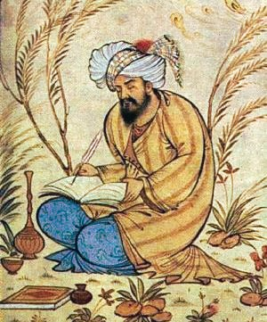

Who Was Rumi?
Rumi, whose full name was Jalal ad-Din Muhammad Rumi, was a Persian poet, Islamic scholar, and Sufi mystic who lived from 1207 to 1273 CE. He is remembered as one of the most influential figures in the history of Sufism, the mystical tradition within Islam, and as the inspiration behind the Mevlevi Order, popularly known in the West as the Whirling Dervishes.
Rumi is especially associated with a philosophy centered on divine love, or ishq, which he treated not as an ordinary human emotion but as the most direct and transformative path toward union with God. Rather than approaching religious truth primarily through legal reasoning or formal theological argument, the philosophy expressed throughout Rumi's poetry insists that intense, consuming love for the divine can dissolve the limitations of the ego and draw the soul back toward its true spiritual origin.
Trained originally as a respected Islamic jurist and theologian, Rumi underwent a profound spiritual transformation in midlife following his encounter with the wandering mystic Shams of Tabriz, an encounter that redirected his life's work toward the composition of mystical poetry. His major works, especially the six-volume Masnavi and the lyrical Diwan-e Shams-e Tabrizi, remain among the most widely read works of Persian literature and Islamic mysticism to the present day.
Because Rumi expressed his philosophy chiefly through poetry rather than systematic prose treatise, scholars continue to debate the precise philosophical structure underlying his teaching, even while broadly agreeing on its central themes. His importance nonetheless remains foundational to Sufi philosophy, and his poetic exploration of love, longing, and union with the divine has secured him an extraordinarily wide readership across many languages and religious traditions.
Rumi: Quick Facts
- Name — Jalal ad-Din Muhammad Rumi (Mevlana)
- Period — 1207–1273 CE
- Born in — Balkh, in present-day Afghanistan
- Died in — Konya, in present-day Turkey
- Philosophical period — Medieval Islamic philosophy and Sufism
- Associated with — Sufi mysticism and the philosophy of divine love
- Known for — The Masnavi, the whirling practice of sama, and the Mevlevi Order
- Major works — Masnavi-ye Ma'navi and Diwan-e Shams-e Tabrizi
- Pivotal relationship — Shams of Tabriz, his spiritual companion
- Historical importance — One of the most widely read Sufi poets and mystical philosophers in history
Rumi and the Flourishing of Sufi Philosophy in Anatolia

Rumi's life unfolded against a backdrop of significant political upheaval, as the westward advance of the Mongol invasions disrupted the settled life of Central Asia and forced many families, including Rumi's own, to migrate westward in search of safety. This displacement eventually brought Rumi's family to Konya, then a major center of learning and culture within the Seljuk Sultanate of Rum in Anatolia.
By the time Rumi reached maturity, Sufism had already developed into a rich and varied tradition within Islamic thought, building on centuries of earlier mystical reflection and producing influential philosophers such as Ibn Arabi in the west of the Islamic world and Suhrawardi in Persia, each contributing distinctive theories of divine reality, spiritual knowledge, and the soul's relationship with God.
Konya itself, under Seljuk patronage, had become a genuinely cosmopolitan center of learning, drawing scholars, poets, and mystics from across the Persian and broader Islamic world. This environment provided fertile ground for Rumi's own synthesis of rigorous Islamic scholarship, inherited from his training in law and theology, with the ecstatic, poetic expression of mystical experience that would come to define his mature work.
In the tradition associated with Rumi, philosophical reflection therefore combined seriously with poetic and musical expression, treating verse, music, and even physical movement not as decorative additions to spiritual life but as genuine vehicles for approaching truths that formal theological argument alone could not fully capture.
Who Was Rumi and What Did He Do?
Rumi was born in the city of Balkh, in a region of the Persian-speaking world now part of present-day Afghanistan, into a family of religious scholars. His father, Baha ud-Din Walad, was himself a respected theologian and mystic, and it was under his guidance, and later under the tutelage of the scholar Burhan al-Din Muhaqqiq Tirmidhi, that Rumi received his early education in Islamic law, theology, and spiritual practice.
Fleeing the advancing threat of Mongol invasion, Rumi's family undertook a long westward migration through several major centers of the Islamic world, eventually settling in Konya, where Rumi would spend most of the rest of his life. There, he succeeded his father as a respected teacher of Islamic law and theology, building a considerable reputation as a scholar well before his emergence as a poet and mystic.
The decisive turning point in Rumi's life came in 1244, when he encountered the wandering dervish Shams of Tabriz. Traditional accounts describe an immediate and profound spiritual connection between the two men, after which Rumi withdrew almost entirely from his former scholarly duties to spend extended periods in intense spiritual conversation and companionship with Shams, a relationship that transformed Rumi from a respected jurist into an ecstatic mystic and poet.
Shams's sudden and still-unexplained disappearance, traditionally believed to have resulted in his death, plunged Rumi into profound grief, which he channeled into an outpouring of mystical poetry, much of it collected in the Diwan-e Shams-e Tabrizi, composed in Shams's honor. In his later years, encouraged first by his companion Salah al-Din Zarkub and then by his disciple Hussam al-Din Chelebi, Rumi composed his monumental work, the Masnavi, until his death in Konya in 1273.
What can be established more securely than the precise details of any single episode in his biography is the extraordinary transformation Rumi underwent from respected legal scholar to celebrated mystical poet, and the enduring devotional community, later formalized as the Mevlevi Order, that gathered around his teaching and memory after his death.
What Did Rumi Believe?
Rumi's philosophy is expressed almost entirely through poetry rather than systematic prose argument, which means that reconstructing his thought requires attending closely to recurring images, stories, and metaphors scattered throughout his major works rather than searching for a single formal treatise setting out his doctrine in ordered fashion.
At the center of this philosophy lies the conviction that the human soul originates from and longs to return to the divine source from which it was separated, a longing Rumi describes repeatedly through images of exile, separation, and homesickness for a spiritual homeland. This longing, rather than being treated as a problem to be reasoned away, is instead embraced as the very engine of spiritual transformation.
Rumi's philosophy treats divine love as the most powerful and direct means by which this separation can be overcome, capable of consuming the limitations of the ego and drawing the lover, meaning the sincere devotee, into ever closer union with the divine beloved. In Rumi's poetry, ordinary human love, longing, and even the pain of separation from a beloved become vivid metaphors for the soul's own relationship with God.
Alongside this emphasis on love, Rumi's teaching consistently returns to the theme of moving beyond the confines of the rational, calculating self toward a state of spiritual intoxication and self-forgetting, without abandoning the deep grounding in Islamic scripture and theology that had shaped his own early training as a jurist and scholar.
Scholars of Islamic philosophy continue to debate how closely Rumi's poetic mysticism should be systematized alongside the more formally philosophical Sufism of thinkers such as Ibn Arabi, but his work is consistently recognized as one of the richest and most influential expressions of Sufi spiritual philosophy ever produced.
Rumi's Philosophy of Divine Love
Ishq, or intense, consuming love, occupies the central place in Rumi's philosophy, functioning not merely as one spiritual virtue among others but as the fundamental force that drives the entire process of spiritual transformation and return to God.
Rumi consistently describes this love as something that overwhelms and ultimately dissolves the ordinary, calculating self, comparing the experience of divine love to fire, to intoxication, and to a kind of madness that appears foolish from the perspective of conventional reason but that Rumi treats as a higher and more direct form of spiritual knowledge.
This philosophy of love allowed Rumi to treat the ordinary experiences of human longing, romantic desire, and the pain of separation from a beloved as genuinely valuable spiritual teachers, since he consistently uses these familiar human emotions as vivid, accessible images for the soul's own yearning for union with the divine.
For Rumi, this love is inseparable from action and transformation rather than remaining a private inward feeling alone, since sincere love for God is understood to reshape how a person treats others, approaches suffering, and ultimately relates to the entire created world, treating every encounter as a potential occasion for deeper spiritual awakening.
Rumi and Shams of Tabriz
The relationship between Rumi and the wandering mystic Shams of Tabriz stands as one of the most significant and closely studied episodes in the history of Sufi philosophy, since it directly precipitated Rumi's transformation from a respected legal scholar into an ecstatic poet and mystic.
Traditional accounts describe Shams as an unconventional and spiritually formidable wandering dervish whose direct, searching questions and intense spiritual presence disrupted Rumi's settled scholarly life, prompting an extended period of intimate spiritual companionship that Rumi's own students and family are said to have viewed with considerable unease and jealousy.
The exact circumstances of Shams's eventual disappearance remain historically uncertain, with some traditional accounts suggesting that he was killed by members of Rumi's own household or followers who resented his influence, though the precise historical facts cannot be established with full confidence from the surviving sources.
Rather than simply mourning this loss privately, Rumi channeled his grief into extensive poetic composition, and much of the Diwan-e Shams-e Tabrizi is addressed to or written in the voice of Shams himself, reflecting Rumi's belief that after a period of searching, he had come to recognize Shams not merely as an external companion but as a mirror reflecting his own deepest spiritual reality back to him.
This relationship illustrates a broader theme in Rumi's philosophy, namely that intense human relationship and spiritual companionship, or suhbat, can themselves become a genuine vehicle for approaching the divine, rather than remaining a distraction from more properly religious concerns.
Sama: Rumi and the Origins of the Whirling Practice
Sama, the ritual practice of listening to music and turning in rhythmic, meditative movement, is among the most visually recognizable elements of the tradition associated with Rumi, later becoming closely identified with the whirling dervishes of the Mevlevi Order.
Traditional accounts trace the origin of Rumi's own turning to spontaneous moments of spiritual absorption, sometimes described as occurring while he listened to the rhythmic sound of a goldsmith's hammer in the marketplace of Konya, moments in which Rumi is said to have entered a state of ecstatic movement that his followers later understood as a form of embodied prayer.
Within Rumi's broader philosophy, sama functions as a physical enactment of the soul's spiritual journey, with the turning dervish symbolically ascending toward union with the divine while remaining grounded through one hand extended downward toward the earth, expressing the idea that spiritual ascent does not require abandoning one's responsibilities within the created world.
Although the highly formalized whirling ceremony now associated with the Mevlevi Order was developed and codified more fully by Rumi's followers and successors after his death, the underlying conviction that music and physical movement could serve as genuine spiritual practice, rather than mere entertainment or distraction, is consistently traced back to Rumi's own teaching and example.
Fana and Baqa: Rumi on the Dissolution and Renewal of the Self
Fana, often translated as annihilation or passing away, refers within Sufi philosophy, including the tradition associated with Rumi, to the dissolution of the limited, ego-bound self in the overwhelming presence of the divine, understood as a necessary stage on the mystical path toward genuine spiritual realization.
Rumi's poetry repeatedly describes this process using vivid images of burning, melting, and dying, treating the apparent destruction of the ordinary self not as a loss to be feared but as the essential precondition for a deeper and more authentic spiritual existence to emerge in its place.
Baqa, often translated as subsistence or abiding, describes the complementary stage that follows this dissolution, in which the mystic, having passed beyond the illusion of a separate, isolated self, comes to abide and act within a renewed awareness of continuous connection to the divine source.
This pairing of fana and baqa gives Rumi's philosophy a distinctive shape, treating spiritual transformation not as the simple accumulation of religious knowledge or the performance of more rigorous ritual practice but as a genuine and often painful process of undoing and remaking the self, expressed throughout his poetry in images of death, rebirth, and continuous spiritual becoming.
Rumi Compared with Ibn Arabi and Suhrawardi
Rumi is often discussed alongside two other major figures of medieval Islamic mysticism, Ibn Arabi, known for his systematic doctrine of the Oneness of Being, and Suhrawardi, founder of the Illuminationist school centered on knowledge through direct spiritual presence, since all three thinkers shaped the later development of Sufi philosophy in distinctive but related ways.
Where Ibn Arabi developed an intricate and highly systematic metaphysical vocabulary to describe the relationship between God and creation, Rumi's own approach remains far more poetic and narrative in character, favoring vivid story, image, and metaphor over formal philosophical terminology, even while engaging with many of the same underlying mystical themes.
Suhrawardi's Illuminationist philosophy, with its emphasis on direct, immediate knowledge of divine light, shares with Rumi's poetry a conviction that the deepest spiritual truths exceed what discursive, syllogistic reasoning alone can establish, though Suhrawardi pursued this insight through a technical philosophical system while Rumi pursued it through sustained poetic expression and lived spiritual practice.
Taken together, these three figures illustrate the remarkable range of medieval Sufi philosophy, spanning systematic metaphysics, philosophical mysticism grounded in the concept of illuminative knowledge, and richly poetic spiritual teaching, with Rumi's own distinctive contribution lying in his capacity to render the most demanding mystical insights accessible through story, image, and song.
The Mevlevi Order and Rumi's Lasting Legacy
The Mevlevi Order, formally established after Rumi's death, drew its inspiration and organizational structure directly from his teaching, his devoted community of followers in Konya, and the spiritual practices, including sama, that had developed around his example during his lifetime.
Leadership of the order passed through Rumi's own family line, beginning with his son Sultan Walad, who played a central role in formally organizing the Mevlevi community and codifying many of its distinctive practices, including the elaborate ceremonial structure of the whirling ceremony practiced by later generations of dervishes.
Over subsequent centuries, the Mevlevi Order became an influential institution across the Ottoman world, associated with distinctive contributions to Persian and Ottoman poetry, music, and calligraphy, while continuing to center its spiritual practice on the teachings and poetry Rumi had left behind.
Beyond the formal structure of the Mevlevi Order itself, Rumi's poetry achieved an extraordinarily wide readership across many centuries and, more recently, across many languages through translation, making him one of the most widely read poets in the world today, even as scholars continue to emphasize the importance of understanding his work within its original Islamic theological and mystical context.
Rumi: Main Philosophical Ideas
Because Rumi's philosophy is expressed almost entirely through poetry rather than systematic treatise, his central ideas are often summarized under a small number of key themes drawn from across his major works.
Divine Love as the Path to Union
Rumi treats intense, consuming love for God as the most direct and transformative means by which the soul can overcome its separation from the divine.
Separation and Longing
The image of the reed cut from its reed bed captures Rumi's conviction that the soul's deepest longing is for reunion with its original divine source.
Fana and Baqa
Spiritual transformation, in Rumi's philosophy, requires the dissolution of the limited ego-bound self, followed by a renewed existence grounded in continuous awareness of the divine.
Sama as Embodied Prayer
Rumi treats music and rhythmic movement as genuine vehicles for spiritual experience, later formalized in the whirling practice of the Mevlevi Order.
Poetry and Story as Philosophical Method
Rumi expressed his philosophy chiefly through vivid poetic imagery, parables, and narrative rather than formal philosophical argument, treating story itself as a vehicle for spiritual insight.
What Do We Actually Know About Rumi?
Rumi is a useful example of how much of a mystic's inner spiritual experience must be reconstructed from poetic expression rather than from independently verifiable historical record, even when significant biographical detail is otherwise well documented.
Relatively Well-Attested
- Rumi was born in Balkh in 1207 and died in Konya in 1273.
- He trained as an Islamic jurist and theologian before his transformation into a mystic poet.
- He composed the Masnavi and the Diwan-e Shams-e Tabrizi, his two major surviving works.
- His encounter with Shams of Tabriz marked a decisive turning point in his life and work.
- The Mevlevi Order was established by his followers and descendants after his death.
Traditionally Reported
- The precise circumstances of Shams of Tabriz's disappearance and death.
- The spontaneous origin of Rumi's own turning in the marketplace of Konya.
- Various anecdotes describing his encounters with other scholars and mystics of his era.
Uncertain or Disputed
- The exact philosophical system, if any, that should be extracted from his primarily poetic body of work.
- The full historical details behind Shams's disappearance.
- How closely the formalized Mevlevi whirling ceremony, as later codified, reflects Rumi's own original practice.
- How Rumi's universal poetic themes should be balanced against his firm grounding in specifically Islamic theology and scripture.
Why Is Rumi Important in Philosophy?
Rumi is important because he gave some of the most vivid and enduring poetic expression to central themes of Sufi philosophy, particularly the transformative power of divine love and the soul's longing for reunion with its source.
His philosophical legacy raises a fundamental question that remains significant for the philosophy of religion and mysticism: Can love itself function as a genuine path to knowledge of ultimate reality, capable of reaching truths that reasoned argument alone cannot fully secure?
This question has continued to resonate across the later history of Sufi philosophy and comparative mysticism, as later thinkers examined how Rumi's poetic account of love, longing, and self-dissolution relates to the more systematic metaphysical frameworks developed by philosophers such as Ibn Arabi and Suhrawardi.
Rumi's importance therefore does not depend on resolving every uncertainty surrounding his biography or extracting a single formal philosophical system from his poetry. His significance comes from his enduring capacity to communicate the deepest concerns of Sufi spiritual philosophy through accessible, richly human poetic imagery that continues to reach readers across many cultures and centuries.
Rumi Explained Simply
Rumi was a thirteenth-century Persian poet and Sufi mystic whose philosophy centers on divine love as the most direct path to union with God, expressed most fully in his major work, the Masnavi.
Instead of treating spiritual truth as something to be secured primarily through formal argument, Rumi's poetry insists that intense love, longing, and even the dissolution of the ordinary self can carry the soul closer to God than reasoned analysis alone, a conviction shaped decisively by his relationship with the mystic Shams of Tabriz.
His image of the reed cut from the reed bed and his association with the whirling practice of the Mevlevi Order remain among the most recognizable and influential contributions of Islamic mystical philosophy to world literature and spirituality.
- Philosopher/Poet: Rumi (Jalal ad-Din Muhammad Rumi)
- Period: 1207–1273 CE
- Tradition: Sufism, Islamic mysticism
- Major doctrine: Divine love (ishq) as the path to union with God
- Central concern: The soul's longing for reunion with its divine source
- Associated practice: Sama, the whirling meditative dance
- Major work: The Masnavi-ye Ma'navi
- Founded (through followers): The Mevlevi Order
A Principle Central to Rumi's Philosophy
“Let yourself be drawn by the stronger pull of that which you truly love.”
Frequently Asked Questions About Rumi
Who was Rumi?
Rumi was a thirteenth-century Persian poet, Islamic scholar, and Sufi mystic who wrote the Masnavi, a major work of mystical Islamic poetry, and whose teachings inspired the Mevlevi Sufi order.
What is Rumi famous for?
Rumi is famous for his mystical poetry, especially the Masnavi and the Diwan-e Shams-e Tabrizi, his philosophy of divine love, and his association with the whirling practice of the Mevlevi Order.
What did Rumi believe?
Rumi believed that intense, consuming love for God is the most direct path to spiritual union, capable of dissolving the ego and drawing the soul back toward its original divine source.
What is Rumi's philosophy of divine love?
Rumi's philosophy of divine love, or ishq, holds that intense love for God is the most direct path to spiritual union, capable of dissolving the ego and drawing the soul back toward its divine source.
Who was Shams of Tabriz to Rumi?
Shams of Tabriz was a wandering Sufi mystic whose intense spiritual companionship with Rumi transformed him from a respected legal scholar into an ecstatic poet, and whose disappearance deeply shaped Rumi's later poetry.
Why did Rumi start whirling?
Rumi is traditionally associated with the origin of the whirling practice known as sama, a form of moving meditation later formalized by his followers in the Mevlevi Order, symbolizing the soul's ascent toward God and the turning of the cosmos.
What is the Masnavi about?
The Masnavi is Rumi's major six-volume poetic work exploring themes of divine love, spiritual longing, and the soul's journey back to God through stories, parables, and direct spiritual teaching.
What are fana and baqa in Rumi's philosophy?
Fana is the dissolution of the limited, ego-bound self in the presence of the divine, while baqa is the renewed spiritual existence that follows, in which the mystic abides in continuous awareness of connection to God.
How is Rumi different from Ibn Arabi and Suhrawardi?
Ibn Arabi developed a systematic metaphysics of divine reality and Suhrawardi built a philosophical system around illuminative knowledge, while Rumi expressed similar mystical themes chiefly through poetry, story, and lived spiritual practice rather than formal philosophical argument.
Why is Rumi important today?
Rumi remains important because his poetry continues to offer one of the most accessible and widely read expressions of Sufi spiritual philosophy, reaching readers across many languages and cultures long after his own lifetime.
Related Islamic Philosophers
Rumi belongs to the wider tradition of medieval Islamic philosophy and mysticism. Explore philosophers who developed different approaches to divine reality and spiritual knowledge.
Philosophy Branches Connected to Rumi
Rumi's philosophical legacy is particularly important for the philosophy of religion, which examines the relationship between the soul and the divine, and for aesthetics, where philosophers investigate the relationship between beauty, art, and spiritual truth.
Why Rumi Still Matters
Rumi did not leave behind a systematic philosophical treatise in the manner of some of his contemporaries, yet his poetry achieved a depth and reach that few formal philosophical works have ever matched, carrying his mystical vision across centuries and languages.
Yet the questions associated with Rumi remain fundamental to the philosophy of religion: Can love itself be a form of knowledge? What does it mean for the self to be dissolved and renewed? How can ordinary human longing illuminate the soul's deeper relationship with the divine?
The Sufi tradition he helped shape transformed these questions into a poetic philosophy of extraordinary emotional and spiritual power. Its emphasis on divine love, the dissolution and renewal of the self, and embodied spiritual practice made Rumi one of the most enduring and widely beloved figures in the history of Islamic philosophy.
Explore Great Philosophers